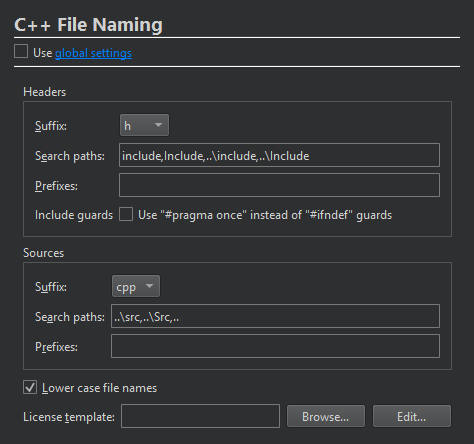

Set C++ file naming preferences
When you use the new file wizard to create a C++ header and source file for a new class in a C++ project, the names of the header and source file are based on the class name. To change the default suffix of a file for a project, select Projects > Project Settings > C++ File Naming.

In the License template field, enter predefined wizard variables to specify the path and filename of the license to use in the source and header files.
To globally change the preferences, select Preferences > C++ > File Naming.
See also Create C++ classes and Use project wizards.